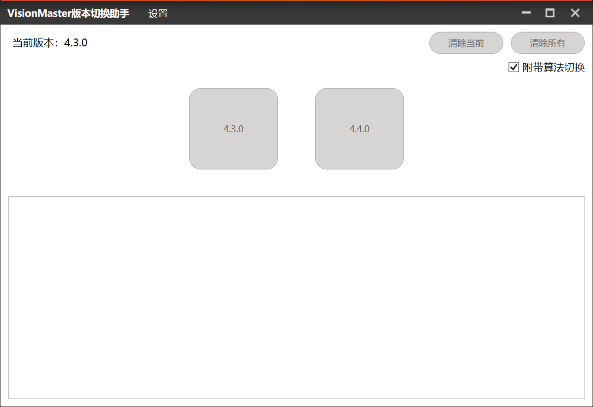
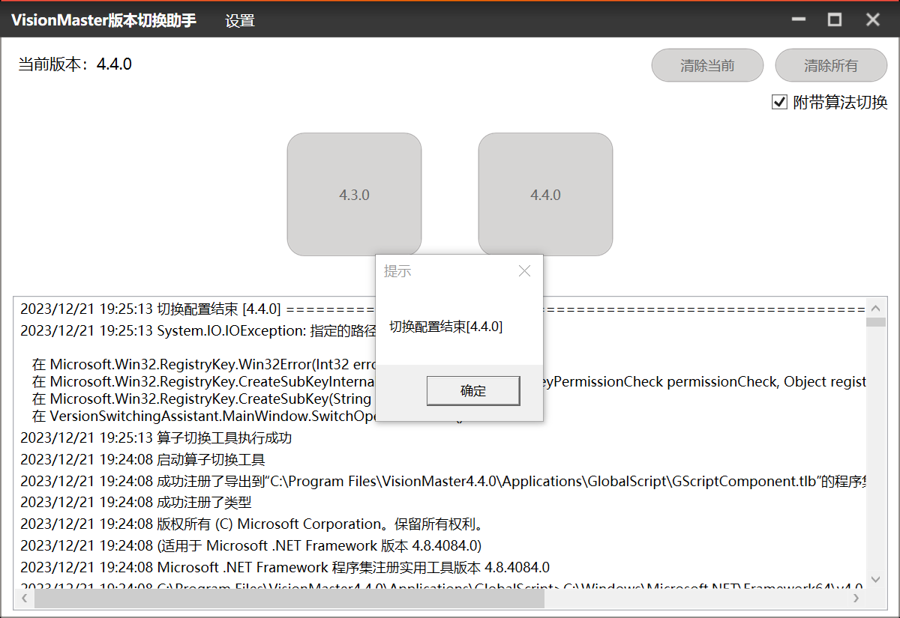
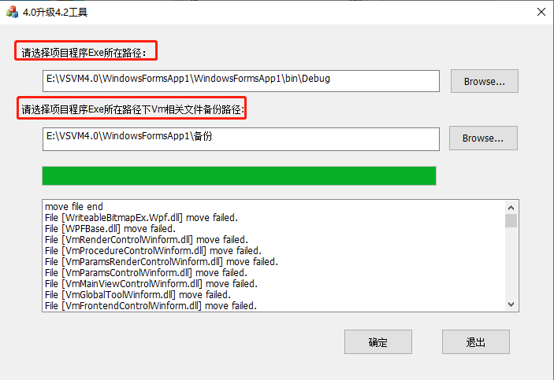
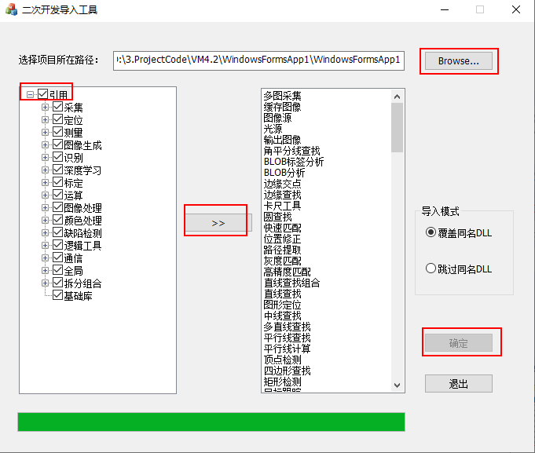

本章节主要介绍如何进行版本切换和版本升级，以及相关注意事项。
版本切换
VM算法平台V4.2版本新增版本切换工具，支持4.2及以上版本与其他版本间进行切换。当PC上同时安装该软件的多个版本时，可使用该工具切换当前可使用软件的版本。工具名称为VersionSwitchingAssistant.exe，所在路径为：..\Applications\Tools\VersionSwitchAssistant。
前提条件：
-
需确保已关闭 VisionMaster 和 Visual Studio 软件的所有相关进程。
操作步骤：
-
双击VersionSwitchingAssistant.exe，启动后会根据注册表自动获取电脑上已安装的VisionMaster版本，界面左上角会显示当前版本号。

- 注解
-
点击【清除当前】可清除当前运行版本的配置信息，点击【清除所有】可清除所有已安装版本的配置信息。
-
默认勾选【附带算法切换】，可在版本切换时将附带的算法进行同步切换。
-
点击对应版本进行切换，等待操作完成即可。

- 注解
-
切换完成后，建议手动启动对应版本的 VisionMaster.exe 以确保运行正常，所在路径为：..\Applications。
-
若切换完成后运行方案不成功，可手动安装对应版本的算子包程序。所在路径为：..\Drivers\MVDAlgorithmSDK_STD.exe；如还需安装深度学习包，可点击 MVDAlgorithmSDK_Patch.exe 进行安装。
版本升级（C# ）
完成版本切换后，若老版本的二次开发程序以及对应的方案和流程需在新版本VM上使用，则需升级。
-
升级二次开发程序：4.0或4.1版本升级到4.2及以上版本时，需按照以下步骤操作。4.2及以上版本间升级时，无需进行以下操作，直接打开即可。
-
使用备份工具DevelopProcedureUpgradeTool.exe将项目中debug文件夹下的内容进行备份。避免和4.2及以上版本的文件产生冲突，导致异常。
备份工具所在路径为：..\Applications\Tools\4.0二次开发程序升级4.2版本工具。

-
使用引用工具ImportRef.exe为程序添加引用。
引用工具所在路径为：..\Development\V4.x\ComControls\Tool。

-
方案和流程升级：使用新版本VM平台打开用老版本VM搭建的方案或流程进行升级，并将方案另存为操作。
- 注解
- 特殊情况下，部分模块、参数或全局变量需要进行检查并微调。